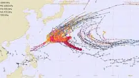

Micah
@rincewind.run
· 10/31 02:55· 命中「OpenAI」
fuck off, sam

3 500+ 次搜尋Social Lab（OpView 社群口碑資料庫）每週彙整各平台熱門事件。榜上的數據以圖表呈現， 這裡列出每週彙整的標題與觀測期間，點進去看完整排行。
 PTT
PTT
 Dcard
Dcard
 Instagram
Instagram
 Mobile01
Mobile01
 YouTube
YouTube
Social Lab 依社群聲量統計的各平台人氣意見領袖前三名。
Bluesky 的全站熱門話題，以英語圈的娛樂、體育、政治為主，僅供參考。
以 30 小時內、依讚數與轉發數排序，已過濾掉 AI 繪圖標籤與明顯洗版內容。
When a barista or bartender knows me and knows my order, I feel seen in a good way. When an AI agent does it, I feel spied on in a really creepy way.
NEW: Sources tell WIRED a defense contractor logged their personal Claude account into the Pentagon's sensitive unclassified network for ~two months, during which it appears to have sent credentials and a network map to a high-risk website, @telliotter.bsky.social reports:
It's believed the spy in question may have leveraged her direct access to Nvidia CEO Jensen Huang to not only feed China intel on one of America’s leading AI companies, but also to influence Trump’s thinking on AI: arstechnica.visitlink.me/ayYiPp
New by me - Anthropic have been hacked to deliver remote access malware to millions of endpoints who use Claude Code. doublepulsar.com/anthropic-ha...
It's not enough that he and his LLM buddies have driven up the price of memory, storage and GPUs by 300-1200% Now they think that any components that are not in THEIR hands is a waste of resources. ... The popping of the AI bubble can't come fast enough.
Sam's latest dumb comments were made on Cheeky Pint, a YouTube channel by Stripe co-founder John Collison one of an endless array of tech bro safe-spaces intended to supplant actual journalists asking actual questions of powerful people
'hey so we have this website that absolutely everyone uses and it works very well! but what if we shat all over that by aggressively implementing an LLM that is not only frequently inaccurate but ALSO decreases usage time AND prevents users from clicking on the sponsored links that fund us!!!'
Should be bigger news, folks. www.npr.org/2026/10/28/n...
- China's AI bubble has burst. - Google is down 13% overnight. - Oracle is basically bankrupt. - Anthropic files for IPO with -62B net losses. Guys we're getting REALLY close now.
Spotify's new AI agent will leverage listeners nostalgia & personal habits to build a surveillance dragnet that tracks where, when and why you are listening to music. In other words, biometric profiling. musically.com/2026/10/23/s...
I love how this company is named "Anthropic" and has an entire cult that lets them tell themselves they're saving humanity but they're happy to buy compute from the single most malevolent person on the planet, a white nationalist who is personally responsible for >700k deaths so far from USAID cuts.
NEW: A defense contractor deployed their personal Claude agent into a secure DOD network, where it sat for months writing and committing code without being detected, sources tell WIRED. It also sent login credentials to a third-party site. Exciting! @telliotter.bsky.social has the scoop:
BREAKING: OpenAI CEO Sam Altman says having RAM in personal computers is an inefficient use of the world’s limited DRAM supply, arguing it would be better allocated to data centers, per Tom’s Hardware
Earlier this year, sources tell WIRED, a contractor caused a security incident at the Department of Defense by connecting a secure centralized system used by multiple intelligence agencies to their personal account for Claude Code, Anthropic’s AI coding agent.
lmao i hate him so much